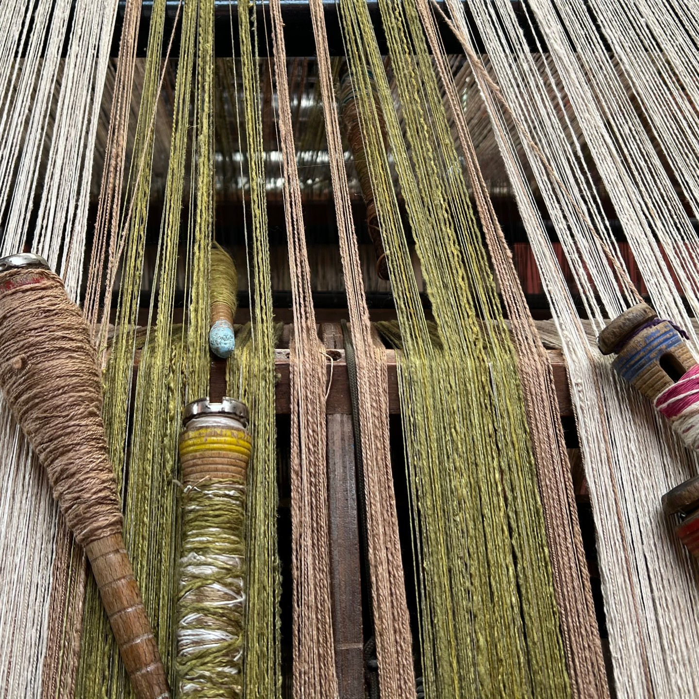

El proceso de producción de hilo de seda en Timbío es una labor que involucra diversos pasos, cada uno realizado con destreza y dedicación. Comienza con la cría de los gusanos de seda, quienes se alimentan exclusivamente de hojas de morera, para luego encapullar en unas rodalinas diseñadas para ellos. Estos capullos son recolectados y sometidos a un delicado proceso de desgomado, donde se eliminan las impurezas y se preparan para la extracción de los preciados hilos de seda.
Con técnicas manuales transmitidas de generación en generación, las maestras tejedoras extraen cuidadosamente los hilos de seda de los capullos. Este trabajo requiere paciencia y habilidad, ya que los hilos son frágiles y pegajosos. Una vez obtenidos, los hilos se someten a procesos de teñido y preparación, donde adquieren una amplia gama de colores vibrantes y se les da diferentes grosores y texturas para hacer el proceso final del montaje en el telar horizontal y elaborar los diseños según la creatividad de las artesanas.
El hilo de seda producido en Timbío, Cauca, es una manifestación de la riqueza cultural y la maestría artesanal de esta región. Cada hilo tejido a mano lleva consigo siglos de historia y representa un legado invaluable. Gracias al acompañamiento de la Escuela Taller de Popayán, este arte milenario se mantiene vivo y continúa floreciendo, ofreciendo piezas únicas y exclusivas que nos conectan con nuestras raíces. Explora el encanto de estas creaciones artesanales y déjate cautivar por la magia del hilo de sed.
